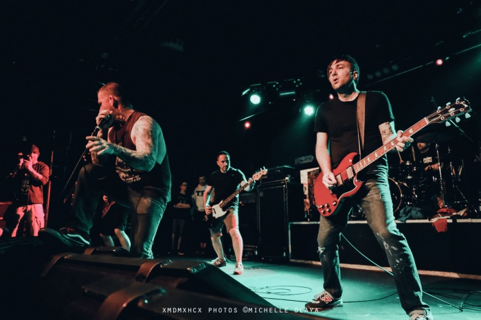
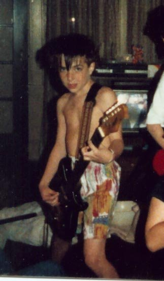
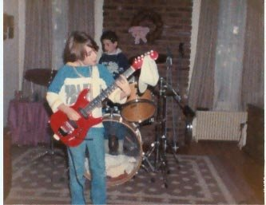

Interview – Michael Scoville – One King Down
When did you start playing guitar and what guitar and equipment did you start on?
I first started really playing around age eight or nine. I have these pictures of me playing two guitars that I don’t ever remember acquiring—I think I may have “borrowed” them from a friend’s house. My first real guitar that I went and picked out from a store was a red Fender Squier Strat. I’m pretty sure I had a small Peavey amp to go with it, because everybody had a Peavey in the late 1980s.


Which bands inspired you to start playing guitar, and are there certain riffs or songs that specifically motivated you?
I was growing up when MTV was in its prime, so Van Halen was always one of my favorites. 1984 was (and still is!) such an amazing album. Even my parents had the cassette, and we would listen to it on long car trips.
At the same time, my older brother was bringing home albums from Iron Maiden, Anthrax, Metallica, and other classic metal/thrash bands. Somewhere in Time was a big influence—I was obsessed with the intro to “Wasted Years” and wanted to learn to play it so badly.
Another highly influential album for me was the New York Hardcore The Way It Is compilation. Some of the first songs I ever learned were “Wise Up” and “Sick People.”
When did you feel your guitar playing and equipment became more professional, leading you to think: “Yes, this is the sound I really like!”?
While I was always trying to be a better player, I didn’t have an early appreciation for how much a good amp can help shape your sound. It took some time before I finally saw the light.
Early on in OKD, I know Matt and I were from the school of “bigger is better.” Speaking for myself, in those early days I prioritized size and lights over actual tone.
Do these two elements (playing and equipment) go hand-in-hand, or did they evolve differently for you?
They definitely evolved at different speeds for me. Like I mentioned earlier, I was more concerned with size and volume. We had full stacks and all this rack gear with dancing lights. While all of this stuff may have looked professional, it didn’t necessarily sound that way.
Do you recall what amps, guitars, pedals, and pickups were used on your albums?
We were sort of “forced” to use a rented Marshall head and cabinet. This was our first time recording in a real studio, and the engineer had a bit of a hard-on for tube amps, while we were all solid-state at the time. It wasn’t giving us the “feel” we were familiar with, and we definitely protested. This caused a little friction out of the gate, but we ultimately acquiesced and used the Marshall. We were young, cocky, and didn’t know shit yet—but things ended up working out.
At that time, I was playing a Joe Satriani model Ibanez with a Floyd Rose. It was a pain in the ass to change strings, and if one broke while I was playing, the whole thing fell out of tune.
We used the same studio and engineer as Absolve, but no tube amp was forced on us this time. That album was originally being recorded for another label, and we were on a pretty tight budget, so I don’t think we spent a ton of time dialing in guitar sounds—we just kind of went with what we had.
At the time, I was using a Peavey Bandit 112 mounted in a rack with a Rockman EQ and stereo chorus. I was also using a Morley Steve Vai “Bad Horsie” wah pedal, which was used on the solo in “Defiance” and on the intro to “More Hate Than Fear,” along with some other studio effects.
I was still using the Satriani Ibanez for that recording. For the acoustic part in “Absolve,” I used a Washburn nylon-string classical guitar.
For this one, I was using an ART rack-mounted preamp/power amp setup with a bunch of built-in effects. I also had a programmable pedal with all my sounds stored—definitely a step up from the Franken-Peavey.
By this time, I had switched to a Gibson SG ’61 Reissue, which is still my main guitar to this day.
It was shortly after recording GLMK that I finally ditched the rack gear and graduated to a Marshall Triple Super Lead. I was also using an Electro-Harmonix Deluxe Memory Man, a Crybaby wah, an MXR Phase 100, and an MXR Flanger. I used my SG on this one as well.
I’ve noticed differences in sound across your albums. Was that due to gear, studio choices, or both?
We recorded all of our albums at the same studio with the same engineer. We may have gotten off to a rocky start, but we ended up having a great working relationship.
For Bloodlust Revenge, we were on a tight budget and kept things very simple. There wasn’t much multitracking or many overdubs, so the guitars can sound a little thin at times, at least to me.
For God Loves, Man Kills, we had more time and money, which meant we could get more ambitious. We recorded four rhythm tracks per side—eight guitar tracks total—before adding overdubs. That’s why it sounds so much fuller.
The God Loves, Man Kills album sounded more technical. Was that intentional?
We definitely pushed ourselves hard when putting those songs together. From a riff-writing perspective, I was always trying to improve on ideas and challenge myself.
Do you set up your guitars yourself, or do you use a tech?
There’s a guy in Boston I bring a couple of my guitars to when they need a bigger overhaul, but overall I do most of my own maintenance.
Have you modded any of your guitar gear?
I’ve been playing the same SG ’61 Reissue since 1997—no mods, all stock.
Can you tell me more about the tuning and strings you use?
For Absolve, we were tuned down a whole step. Bloodlust Revenge and God Loves, Man Kills were in standard tuning, with a couple of GLMK songs in drop D. For Gravity Wins Again, we tuned down a half-step, which is what we still do now.
As for string gauge, I experimented for a while—straight 9s, then 10s—but I’ve settled on GHS Boomers (9–46). I like being able to bend easily on the upper frets, and the lighter treble strings help with that.
How relevant is the speaker cabinet to your sound?
I’ve always been a fan of Marshall vintage cabinets with Celestion Greenbacks—they really bring out the mid-range bite of my ’57 Classics. That said, I haven’t owned my own cab in over 20 years, so I’m usually at the mercy of the venue or generous friends.
What is your favorite guitar at the moment?
I don’t think I have a single favorite. The one I play the most is my SG—it’s the most comfortable and the one I’ve had the longest. I also have an EVH Frankenstein relic that’s incredibly fun to play. You can’t help but crank the gain and do your best Eddie impression. When I want something more mellow, I grab my Gibson Les Paul ’56 Reissue Goldtop with P-90s. Those pickups sound great clean or dirty.
If you could choose one amp to play for the rest of your life, which one would it be?
Probably a Marshall Super Lead into a cabinet with 25-watt Celestion Greenbacks.
Which album are you most proud of as a guitar player?
I’m most proud of Bloodlust Revenge for how long the music has endured. The fact that it still resonates with people today is amazing to me—that’s really all you can ask for when you create something and put it out into the world.
Is there something you learned over the years about guitar gear that gave you an “Aha!” moment?
K.I.S.S.—Keep it simple, stupid.
Passive vs. active pickups: which do you prefer and why?
I’ve only ever used passive pickups. I’ve played guitars with active pickups, but they never really did anything for me.
What is the most consistent item in your guitar rig?
My SG. It’s been my main guitar for almost 30 years, and it’s just so comfortable to play.
Which riff of one of your songs are you most proud of?
I can’t narrow it down to one. I’m proud of the intro/main riff in “More Hate Than Fear”—I’ll never get tired of playing that one. The verse parts in “Deliver Me” are also a lot of fun, especially how they use all six strings. I’m also proud of some of the riffs in “From Cradle to Grave,” where I used this whole-tone scale I had just learned, and it ended up sounding pretty cool.
Do you use a guitar-playing technique that’s instantly recognizable as your signature?
I don’t think my style is instantly recognizable, but I do make a conscious effort to avoid typical hardcore tropes. I’m not afraid to use all the strings and add color to chords instead of sticking to power chords the whole time.
Did you change how you write knowing there’s a second guitar player in the band?
One of the perks of having two guitar players is the freedom to play different parts—it adds texture and size. If I come up with a riff, I usually look for a complementary part. If I can’t find one, I’ll leave it up to Matt. Sometimes playing in unison is more impactful, but having the option for harmonies or layers is great.
Which current guitar players inspire you and why?
I’ve got two young kids at home, so I don’t get a lot of time to listen to new music. My Spotify Wrapped was a mix of K-Pop Demon Hunters, Disney soundtracks, Pantera, and Cro-Mags. If Into Another counts as a current band, then Peter Moses has always been a huge inspiration.
Last but not least: any final words or tips for guitar players out there?
Listen to what makes you happy. Play what makes you happy. Van Halen Forever. Check out One King Down’s Instagram page Listen to One King Down on Spotify